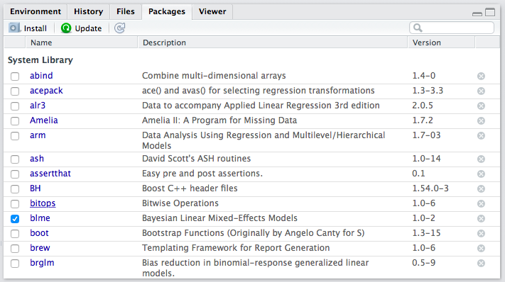

x <- c(1, 3, 2, 5, 4)
y <- c(2, 1, 4, 3, 5)Loading Data into R
Before we can get into the details of loading pre-existing data sets into R, we need to cover a prerequisite: pacakges.
Packages
Because R is an open-source program, it is easy to write extensions, and thousands of people have. These extensions come in the form of “packages,” and these packages contain mostly functions that do stuff with data.
For example, I’ve written an R package that does plotting. (I’ve since deferred to ggplot2.) I’ve written another package that estimates a statistical model.
Hadley Wickam has written many R packages, some of which we’ll use. He’s written haven, which we can use to read proprietary data formats, such as Stata (.dta) files. He’s also written readr, which we can use to quickly read in better formats, such as comma-separated values (.csv), which I’ll encourage you to use throughout the course. He’s also written a package that is helpful for creating plots called ggplot2. We see that later.
In order to use a package, it must be installed once per workspace1 and then loaded in each session (i.e., after each restart). Some packages come pre-installed in R (e.g., stats, MASS). Some of these pre-installed packages are automatically loaded in each session (e.g., stats), while others must be loaded manually in each session (e.g., MASS) if you want to use them. Other packages that do not come pre-installed with R need to be installed manually and loaded in each session. You can do this easily by adding a line to load each needed package at the top of your scripts.
Installing Packages
If you click the “Packages” tab in RStudio (positioned in the lower-right panel by default), it will show you a list packages that are currently installed. I’ve attached a screenshot of my installed packages below, but your’s might look slightly different–I’ve probably installed a lot more than you.

If you want to use a function from a package and it is not installed, you must first install it.
You only need to install a package once per workspace. Once you’ve installed it, you have it in that workspace forever.
Review Exercises
- Use the Packages interface to install the tidyverse, haven, readxl, and ggthemes packages. You need to install these packages for each workspace (in which you want to use them).
Loading Packages
In order to use a function from a package, though, the package must be installed and loaded. In the packages list, the check box (beside the package name) indicates whether the package is loaded. In the screenshot above, you can see that I only had one package loaded at the time I took the screenshot–blme, a package useful for estimating Bayesian linear mixed-effects models.
Let’s see how to access functions that are in packages. First, let’s create some data to plot.
Now let’s try to use the qplot() function in the ggplot2 package to create a scatterplot of x and y. I’m assuming that you’ve already installed the ggplot2 package (it’s included in the tidyverse package).
Now, let’s try to use qplot().
qplot(x, y)Error in qplot(x, y): could not find function "qplot"You’ll notice that the qplot() function cannot be found. That’s because while ggplot2 is installed (i.e., present in the library), it is not loaded (i.e., off the shelf). If you want to use a function from the ggplot2 package, you need to load the package using the library() function. You need to load the package each time you start a new session (e.g., restart RStudio), so be sure to include this in your script. Notice that you do not need to use quotes around the name of the package when using the library() function.
library(ggplot2)
qplot(x, y)Warning: `qplot()` was deprecated in ggplot2 3.4.0.
When we use library(), it loads the entire set of functions in the package into our workspace, making them all accessible to us. There are hundreds of functions in the ggplot2 package. If we prefer to avoid loading all the functions, we can use the syntax package::function() to tell R where to find the function in the library without loading all the functions into the workspace.
ggplot2::qplot(x, y)ggplot2::qplot(x, y) will work whether or not ggplot2 is loaded.
I don’t have strong feelings about which approach is better–it depends on the context. If you only need to use one function from package one time, then perhaps it makes more sense to use the package::function() approach. If you’ll be using many functions many times, then it makes sense to use library(). Use whichever makes most sense to you. However, I’ll tend to use package::function() a lot, because it makes it clear where the function is coming from. For example, if I write readr::read_csv(), you know that I’m referring to the read_csv() function in the readr package.
Review Exercises
- Write a script that uses the
library()function to load the tidyverse, haven, and readxl packages.
Loading Data into R
Rather than manually entering data using c() or something else, we’ll want to load data in stored in a data file. For this class, these will usually be one of three types:
- R data or
.rdsfiles. This is the easiest format because it stores factors as factors and all the related information. Read withreadr::read_rds(). When you load the tidyverse package, it automatically loads readr as well. - comma-separated value or
.csvfiles. This is a common data format. However, it stores factors as character strings, so the data file does not contain the information about factors. Read withreadr::read_csv(). - Stata or
.dtafiles. Another common data format because many political scientists use Stata. Read these files into R withhaven::read_dta(). - Excel or
.xlsxfiles. Read these files into R withreadxl::read_excel().
Comma-Separated Value Format (.csv)
Data can be stored in a wide range of formats. One popular format, for example, is Stata’s proprietary .dta format. I typically use (and encourage you to use) the comma-separated values .csv format. The .csv format is excellent because it is open and simple. This means that anyone can use it without acess to proprietary software. It will also be useble by anyone into the foreseeable future. We can see why .csv files are easy to work with if we open it up the file nominate.csv with a text editor. You’ll see that you can read the file directly. You don’t really need software, you can do it with your eyes!
.csv in a Text EditorI tried the same thing for a similar .dta file. You can see that it looks like nonsense. You’ll definitely need Stata (or other speciallized software) to work with this file.

.dta in a Text EditorAlso, .csv files are easy to support, so they work in almost all data analysis software. For example, we can open up nominate.csv in Excel. You can see that we have six variables in the columns and many cases in the rows (we don’t know how many because they overflow the screen). In this case, each row represents a particular Congressperson from a particular Congress (and Presidents are also included). The second row, for example, is for Rep. Callahan (R) from the 1st Congressional District of Alabama. During the 100th Congress, Rep. Calahan has a ideology score of 0.358, which means he’s conservative, but not as conservative as Pres. Reagan, who has a score of 0.747. We’ll work with these data a lot thoughout the semester, so we’ll have plenty of time for closer examination.

.csv in ExcelReading the Data
First, you must get your data file into the project directory. First, download the data from the data page. Notice where your computer saves the file. Since you are using the cloud, then select the Files tab in the lower-right panel of the Rstudio window. Then click Upload > Choose file. Navigate to and select the data file. Click Choose. Click Okay. Notice that the data file appears in your list of files.
Now we simply need to run readr::read_csv("cool-data.csv") to load the data set (cool-data.csv is just a placeholder for the actual name of the data set).
Review Exercises
To practice, download the data set nominate.rds from the data page. Open RStudio and set the working directory to your class folder. Read those data into R. Now try it with the other file formats. See the code below for examples. Note that these datasets contain the same information, so you only need to choose one of the four formats. I show you how to load all four formats here for examples.
# Before this will work, upload the data files.
# load packages (install if needed)
library(tidyverse) # for read_csv() and read_rds() functions── Attaching core tidyverse packages ──────────────────────── tidyverse 2.0.0 ──
✔ dplyr 1.1.4 ✔ readr 2.1.5
✔ forcats 1.0.0 ✔ stringr 1.5.1
✔ lubridate 1.9.4 ✔ tibble 3.3.0
✔ purrr 1.1.0 ✔ tidyr 1.3.1
── Conflicts ────────────────────────────────────────── tidyverse_conflicts() ──
✖ dplyr::filter() masks stats::filter()
✖ dplyr::lag() masks stats::lag()
ℹ Use the conflicted package (<http://conflicted.r-lib.org/>) to force all conflicts to become errorslibrary(haven) # for read_dta() function
library(readxl) # for read_excel() function
# read data
nominate <- read_csv("nominate.csv") # read csv fileRows: 7992 Columns: 7
── Column specification ────────────────────────────────────────────────────────
Delimiter: ","
chr (4): chamber, state, party, name
dbl (3): congress, district, ideology
ℹ Use `spec()` to retrieve the full column specification for this data.
ℹ Specify the column types or set `show_col_types = FALSE` to quiet this message.nominate2 <- read_dta("nominate.dta") # read dta file
nominate3 <- read_rds("nominate.rds") # read rds file
nominate4 <- read_xlsx("nominate.xlsx") # read xlsx file
# check that data read properly
glimpse(nominate) # quick look at the dataRows: 7,992
Columns: 7
$ congress <dbl> 100, 100, 100, 100, 100, 100, 100, 100, 100, 100, 100, 100, 1…
$ chamber <chr> "House", "House", "House", "House", "House", "House", "House"…
$ state <chr> "AL", "AL", "AL", "AL", "AL", "AL", "AL", "AK", "AZ", "AZ", "…
$ district <dbl> 2, 4, 3, 5, 6, 1, 7, 1, 2, 3, 5, 4, 1, 3, 1, 4, 2, 36, 10, 29…
$ party <chr> "Republican", "Democrat", "Democrat", "Democrat", "Democrat",…
$ name <chr> "DICKINSON, William Louis", "BEVILL, Tom", "NICHOLS, William …
$ ideology <dbl> 0.398, -0.213, -0.042, -0.175, -0.060, 0.373, -0.085, 0.283, …Data Frames
Almost the statistical computation we do in this class revolves around datasets. In R, it usually makes sense to store data sets as specific objects known as data frames. Data frames are simply a collection of vectors that all contain the same number of elements. These might be numeric, character, factor, or logical vectors, or some mixture of types.
When you read a data set into R using readr::read_csv, readr::read_rds(), haven::read_dta(), or some other method, it creates a data frame. A data frame is a special R object that holds a set of vectors that all have the name number of elements. If you think of the dataset as an Excel spreadsheet, then you can think of the columns of the spreadsheet as the vectors held by the data frame. These vectors (or “variables”) can be numeric, character, factor, or logical. As a reminder, here are the variable types:
numeric: numbers, such as 1.1, 2.4, and 3.4. Sometimes numeric variables are subdivided intointeger(whole numbers, e.g., 1, 2, 3, etc.) anddouble(fractions, e.g., 1.47, 3.35462, etc.).character: text strings, such as"Republican"or"Argentina (2001)".factor: cateogories, such as"Very Liberal","Weak Republican", or"Female". Similar tocharacter, except the entire set of possible levels is defined. Afactorvariable may be ordered or unordered.logical: true or false, such asTRUEorFALSE.
For the .csv files we will sometimes use, R cannot distinguish between character and factor variables. By default, readr::read_csv() will load these as character variables–there’s no way for R to know the entire set of levels from the .csv file anyway. Sometimes, though, it will be useful to work with factor variables. This is straightforward to change. To save you a bit of frustration, we will usually use the .rds format, where the factors are already set up properly.
Working with Variables in Data Frames
A data frame holds the variables, but it also hides the vectors. For example, the data frame nominate, which we loaded above, has a numeric variable ideology, but if we try to sum it, we get an error.
sum(ideology) # fails because the variable ideology is hidden in a data frameError: object 'ideology' not foundWe’ve loaded the data set, but R can’t seem to find the variable. That’s because the variable ideology is hidden in the data frame nominate.
In order to access variables in data frames, we need to do one of two things.
- Use the
$operator. - Use the
dataargument.
Some functions, such as exp() are designed to work with vectors, not data frames. This will be the case for most functions we use (with the notable exceptions of plotting in with ggplot() and estimating liner model with lm()). To use the functions on variables stored in data frames, we need to use the $ operator.
Suppose we have a data set loaded and given to the object my_data. If my_data contains the variable of interest my_variable, then we can access my_variable using the syntax my_data$my_varible. That is, the syntax data$var means “get the variable var from the data set data.” We’ll use this often, so make sure it’s clear.
sum(nominate$ideology) # example of the $ operator[1] NAsum(nominate$ideology, na.rm = TRUE) # example of the $ operator[1] 202.209But some functions are designed to work with data frames. For example, the qplot() function in the ggplot2 package is designed to work with data sets. If you open the help file for qplot() (i.e., help(qplot) after library(ggplot2)), you’ll see that one of the arguments is data. If you use this argument to point qplot() to the data frame, it will know where to find your variables.
# load ggplot2 package, which contains the qplot() function
library(ggplot2)
# example of a function with a data argument
qplot(ideology, data = nominate) # using the data argument`stat_bin()` using `bins = 30`. Pick better value with `binwidth`.Warning: Removed 25 rows containing non-finite outside the scale range
(`stat_bin()`).Many of the functions we use take a data argument. If they do not, though, we’ll need to use the $ operator. Because we’ll almost always use data stored in data frames, you need to be sure to use one approach or the other. If the function has a data argument, use it. In other cases, use the $ operator.
How We’ll Always Use R
In the Cloud
- Go to rstudio.cloud.
- Open a previously created project OR start a new project.
- Open a new R script to do something new OR, if previously created, open a previously saved script to continue making progress.
Overview
To load a data set in R, you must…
- Get the data file from somewhere (usually the web).
- Open RStudio Cloud.
- Open an existing project or start a new one.
- Make the data accessible to RStudio. Simply upload the data file to the files for that project.
- Load the data by giving the appropriate function the name of the data file (e.g.,
read_csv("nominate.csv")). Be sure to load any necessary packages. Be sure to assigned the data to a well-named object (i.e., using<-) so you can use it later in your script.
A note about paths
You might usually save your data sets to the home directory. But if you want, you can create a sub-folder–you might call it data/ for example–and save your data set(s) there. If you upload your data set(s) into a sub-folder, then you’ll need to add that to your path. For example, you would need to use read_csv("data/nominate.csv").
Review Exercises
- Explain the difference between “installing” and “loading” an R package. How do you do each? When do you need to do each?
- Download the nominate data sets from the data page to a known location on your computer.
- Make the data available to R. Since you are working in the cloud, start a new project (perhaps name it “Loading Data HW”) and upload the data into the project (see details in the notes above). In this new project, install the tidyverse, haven, and readxl packages.
- Start a new R script that loads the tidyverse, haven, and readxl packages.
- In the same script, load the each version of the nominate data set using the appropriate function. Assign each data set to a different object name.
- Use
glimpse()(part of tidyverse) to get a quick look at each data set. Do the data sets seem identical? - Try to use three different functions (
mean(),sum(), etc.) on the data frames or variables in the data frames. Using#comments, explain what each function is doing, if you can. Just experiment a bit.
Footnotes
I’m assuming you are using Posit Cloud. If you are using RStudio installed locally, then you only need to install a package once per computer.↩︎